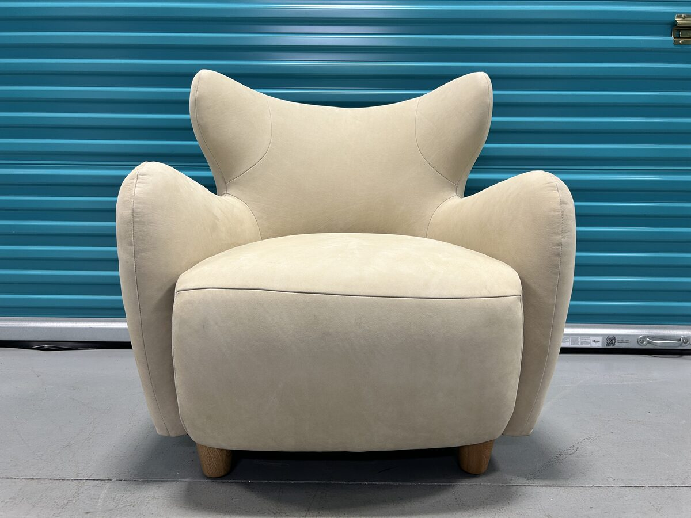
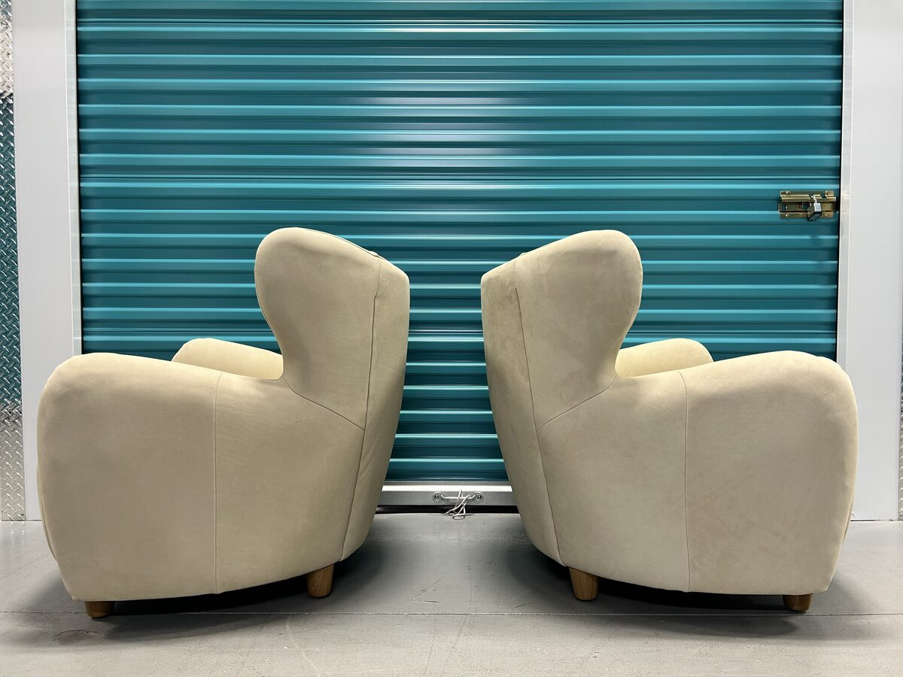
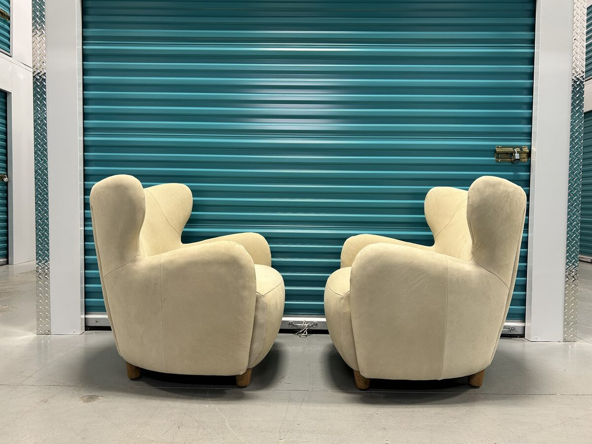
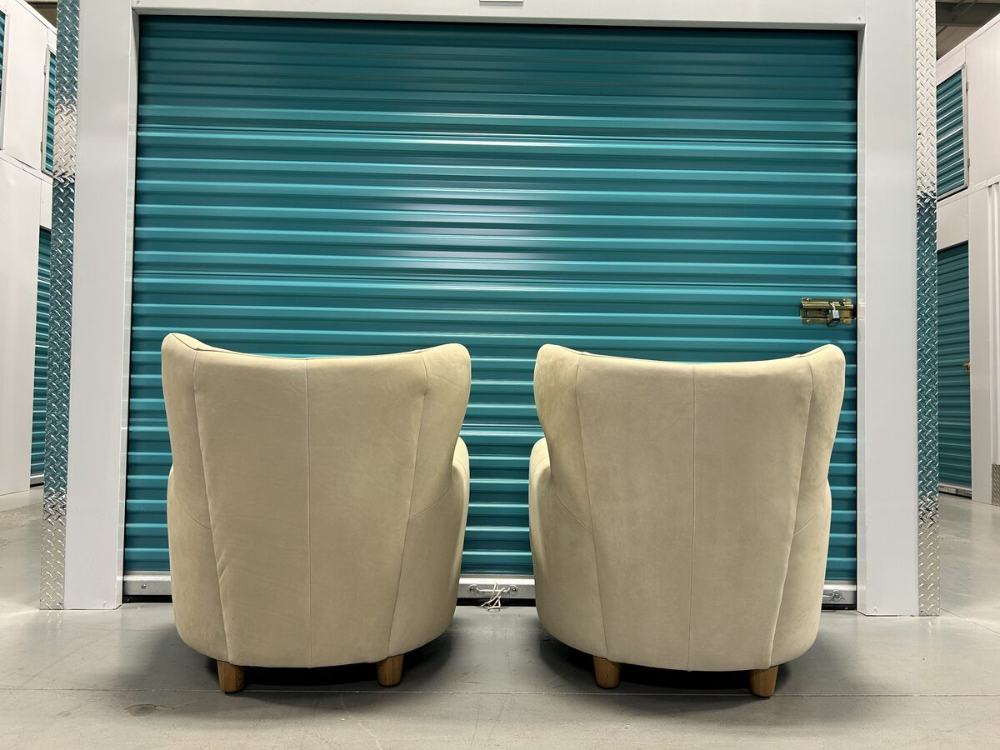

Jodie Wing Chair — Beige Nubuck Leather (Matched Pair)
The Jodie is West Elm’s sculptural take on the classic wing chair — flared wings, a deep rounded seat, and full curved arms that wrap the sitter, riding low on solid oak legs in a water-based Almond finish. The back and profile are as resolved as the front, so the chairs work floating in a room rather than only against a wall. The upholstery is beige nubuck: 100% top-grain, full aniline dyed hide buffed to a suede-like texture and a velvety matte finish. Each chair measures 32 inches wide, 34.5 deep, and 34 tall over a kiln-dried frame with high-gauge sinuous springs, and both are contract-grade and GREENGUARD Gold Certified. We acquired this matched pair from the Royal Gardens area of southwest Edmonton — delivered new by West Elm in July 2026, they came to us in essentially brand-new condition and were sold together.
If you have a Jodie or a similar West Elm wing chair you’re thinking about selling, we buy West Elm directly — no listing, no waiting. Our team handles the full, specialized in-home removal and transport.
Description
A matched pair of West Elm Jodie wing chairs, sold together. The Jodie is a sculptural take on the classic wing chair — flared wings, a deep rounded seat, and full curved arms that wrap the sitter, riding low on solid oak legs. The back and profile are as resolved as the front, so the pair works floating in a room rather than only against a wall. The upholstery is beige nubuck: top-grain hide buffed to a suede-like texture and a velvety matte finish, which will lighten and soften as it ages.
Features
- 100% top-grain, full aniline dyed nubuck leather — gently buffed for a smooth, suede-like texture and velvety matte finish
- Solid and engineered wood frame, kiln-dried for added durability
- Solid oak legs in a water-based Almond finish
- High-gauge sinuous springs for seat support; webbed back cushion support
- Fibre-wrapped, high-resiliency polyurethane foam cushion cores; attached cushions
- Medium seat firmness — 3 on West Elm's 1-to-5 scale
- Contract-grade — manufactured to meet the demands of commercial use in addition to residential
- GREENGUARD Gold Certified — screened for over 10,000 chemicals and VOCs
- 275 lb weight capacity per chair
Condition
Includes
All designer pieces are inspected for construction, materials, and manufacturer consistency before listing.
Frequently Asked Questions
Are these authentic West Elm Jodie chairs?
Yes. They were purchased directly from West Elm — ordered in March 2026 and delivered on July 11, 2026 — and the original order confirmation is available for verification. Every designer piece we list is also inspected for construction, materials, and manufacturer consistency before going up.
Was the price for one chair or both?
Both. The chairs were sold together as a matched pair, and the price covered the two of them. Buying the same pair new runs $4,598 before tax and delivery, with a 16-plus week made-to-order wait — these were available immediately.
What is nubuck leather?
Nubuck is top-grain leather that has been gently buffed to create a smooth, suede-like texture with a velvety matte finish. This is 100% top-grain, full aniline dyed hide — a natural product, so variation in colour and texture is inherent, and no two pieces are exactly alike. It will lighten and soften gracefully as it ages. Keep it out of prolonged direct sun and brush occasionally with a suede brush to maintain the nap.
How firm are the seats?
Medium — West Elm rates the Jodie a 3 on its 1-to-5 firmness scale. High-gauge sinuous springs support the seat, the back is web-supported, and the cushions have fibre-wrapped high-resiliency foam cores. The cushions are attached, so they hold their position and shape without daily fluffing.
What are the exact dimensions?
Each chair is 32 inches wide, 34.5 inches deep, and 34 inches high overall. The seat is 23 inches wide and 25 inches deep with a 17.5-inch seat height; arm height is 23.5 inches, back height 34 inches, and leg height 3 inches. Each chair weighs 46 pounds with a 275-pound weight capacity — light enough to move through tight halls and doorways easily.
Do you deliver?
Yes. We deliver throughout Edmonton and surrounding areas, and we arrange delivery across Alberta on request. Delivery is offered for an additional fee that depends on distance and access.